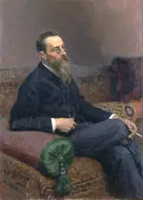

Scheherazade
4 recordings · 39 min
In the Hall
- I. The Sea and Sinbad’s ShipSan Francisco Symphony Orchestra, Pierre Monteux; Naoum Blinder, violin · 3–4 March 19428:19
The first movement of Scheherazade, Op. 35, opens with a phrase for brass and strings, followed by a solo violin over a harp, representing the Sultan and Scheherazade. Pierre Monteux conducts the San Francisco Symphony, with Naoum Blinder playing the solo violin part.
Listening notes · joins
- Opening phrase in octaves
Brass, low woodwinds and strings play a descending phrase in octaves, marked Largo e maestoso. The strings are marked pesante. Pauses break up the phrase, and soft wind chords follow.
- Solo violin and harp
After the heavy orchestral opening, the solo violin, Scheherazade’s theme, plays above the harp. The score marks the passage Lento and Recitativo. Naoum Blinder is the soloist.
- Allegro non troppo, sea theme
Allegro non troppo. The strings begin a rolling accompaniment, and the Sultan’s phrase returns as the broad sea theme. Its long notes are held over the quicker motion below.
- Naval career
Rimsky-Korsakov entered naval college at twelve. He began his First Symphony before a three-year voyage, and on his return divided his life between music and the navy. For years his posts included inspecting naval bands.
- Scheherazade and the Sultan
In The Thousand and One Nights, Scheherazade leaves each story unfinished at the end of the night. The Sultan postpones her execution so that he can hear the rest. Rimsky-Korsakov gave her a solo violin, which plays against the full orchestra.
- Recording, San Francisco, March 1942
Monteux and the San Francisco Symphony made this recording at the War Memorial Opera House on 3–4 March 1942. Naoum Blinder played the violin solos. The complete suite filled Victor’s 78-rpm album DM-920.
- Return of the sea theme
The broad sea tune returns over rolling string figures. Brass and strings now play the melody, which first appeared as the Sultan’s unaccompanied theme. Beneath its long notes the accompaniment rises and falls.
- Closing pages in E major
The closing pages are in E major. Short solo phrases continue in the strings and winds. At the end a solo cello plays a rising and falling figure under held wind chords, and the strings finish with soft pizzicato notes.
Joins
- Wind chords before the violin recitative
The heavy opening stops. Soft wind chords, separated by fermatas, lead to the violin’s Lento recitative. Harp chords replace the orchestral bass, and the violin climbs into its winding espressivo line.
- From violin cadenza to Allegro non troppo
A cadenza and a held violin note end the recitative. At Allegro non troppo the key signature changes to E minor. Violas and cellos begin rolling figures, the violins take up the broad tune above them, and the winds sustain the harmony.
- II. The Story of the Kalender PrinceSan Francisco Symphony Orchestra, Pierre Monteux; Naoum Blinder, violin · 3–4 March 194210:26
The Story of the Kalender Prince is the second movement of Scheherazade, Op. 35. Scheherazade’s violin introduces the bassoon, whose winding melody in B minor passes to the oboe and strings, and brass fanfares interrupt it repeatedly.
Listening notes · joins
- Solo violin recitative
The solo violin plays another recitative over harp chords, marked Lento, Recitativo. The theme is Scheherazade’s, heard in the first movement. The violin cadenza slows with a ritardando, and the bassoon takes over as soloist.
- Bassoon solo in B minor
A bassoon begins in B minor, marked dolce ed espressivo, sweetly and expressively. Four muted double basses hold a quiet foundation beneath it. The tune alternates short dance figures with longer held notes.
- Naoum Blinder, solo violin
The solo violin is Naoum Blinder, concertmaster of the San Francisco Symphony. He reached the United States in 1928 with the banker Felix Warburg’s sponsorship and taught many violinists, Isaac Stern among them.
- Variations on the bassoon theme
The bassoon’s theme returns several times, each time with a different orchestration. The strings play tremolo, a repeated accompaniment figure runs beneath the theme, and short, sharp figures cut across the texture.
- Conservatory professorship, 1871
In 1871 the composer accepted a professorship at the Saint Petersburg Conservatory. He was twenty-seven. Alongside his teaching, he set about learning the harmony and counterpoint that his own training had left out.
- Brass calls and march
Short, loud brass calls interrupt the long melody. The new idea comes from the Sultan’s phrase in the first movement, and horns, trumpets and trombones develop it into a march.
- The Sultan’s theme in the brass
The unison phrase associated with the Sultan at the opening of the suite returns in the brass in this movement. Rimsky-Korsakov wrote that it serves here only as musical material, since in the Kalender’s tale “there cannot, however, be any mention of Sultan Shakhriar.”
- Clarinet solo over pizzicato strings
A solo clarinet plays the tune freely, and the strings play repeated pizzicato chords beneath it, following the soloist’s tempo. The score marks the clarinet lento, lungo (slowly, at length), then accelerando.
- Fanfare for muted trumpet and trombone
The sharp fanfare for muted trumpet and trombone first sounds in this movement. Rimsky-Korsakov wrote that it returns in the finale “in the delineation of the wrecking ship”, though that episode has no connection with the Kalender’s tale.
- Bassoon cadenza and final section
The bassoon returns with a cadenza, following the earlier clarinet cadenza. Its tune opens the last large section of the movement. The same short figures are now accompanied by the brass march.
- Closing Animato and B major chord
Short woodwind phrases lead into the last page, marked Animato. Strings play rapid figures beneath brass chords, and timpani reinforce the bass. The B minor tale ends on a sharp B major chord.
Joins
- Violin cadenza to bassoon Andantino
The violin cadenza slows, marked ritardando assai. At the Andantino the bassoon begins its B minor tune above four muted double basses.
- The Sultan’s phrase becomes a march
A figure first played pizzicato by the low strings is taken up by the brass as fanfares. The figure is related to the Sultan’s motto, which connects this interruption to the first movement. Horns, trumpets and trombones exchange short calls over sustained chords in the woodwind and strings.
- Pizzicato strings under solo clarinet
The orchestral chord stops at a fermata. At Moderato assai (rehearsal F), a solo clarinet plays a free recitative. The strings play short repeated pizzicato chords marked colla parte, slowing and speeding up with the soloist.
- III. The Young Prince and the Young PrincessSan Francisco Symphony Orchestra, Pierre Monteux; Naoum Blinder, violin · 3–4 March 19428:16
The third movement of Scheherazade, Op. 35, opens with a long melody in G major for the two violin sections, which the woodwinds then take up as a dance with snare drum. Scheherazade’s solo violin enters in the lovers’ scene before the end.
Listening notes · joins
- Opening melody, violins
The violins play the melody in G major over sustained lower strings. Long notes alternate with short runs. The marking is Andantino quasi allegretto.
- Composition and first performance, 1888
Rimsky-Korsakov wrote Scheherazade in the summer of 1888. That November he conducted its first performance in Saint Petersburg.
- Naval school and the Almaz voyage
In 1856, aged twelve, Rimsky-Korsakov was taken to St Petersburg to enter the naval school. By 1861 Balakirev had him writing a symphony. In 1862 the new midshipman sailed on the clipper Almaz; the voyage, he recalled, lasted two years and eight months, and music was “wholly forgotten”.
- Allegretto, rehearsal E
Flute and clarinet break the long melody into short dance phrases. The strings play pizzicato beneath them, and the snare drum marks the beat. The flute is marked ben marcato staccatissimo, meaning very short, clearly marked notes.
- My Musical Life, 1909
In My Musical Life, published in 1909, Rimsky-Korsakov wrote that he wanted the hearer to carry away “an oriental narrative of some numerous and varied fairy-tale wonders”.
- Princess’s theme at the festival
Rimsky-Korsakov objected to listeners who tied each theme to one meaning: “In vain do people seek in my suite leading motives linked unbrokenly with ever the same poetic ideas and conceptions,” he wrote. The Princess’s clarinet theme returns at the Baghdad festival, though the Arabian Nights does not place her there.
- Return of the opening tune
A trumpet-led phrase in rubato extends the dance before the opening tempo returns, marked Come prima. The violin sections take up their long tune again. The woodwinds play less around it, and the string phrases are longer.
- Solo violin recitative and cadenza
One violin takes over, with a few harp chords beneath it. The score marks Orchestre tacet, and the rest of the orchestra stops. Scheherazade’s recitative returns and turns into a cadenza, after which the woodwinds enter.
- Allargando assai, rehearsal M
Allargando assai, broadening greatly. The violin sections take over the melody from the soloist, and the horns remove their mutes. The full orchestra plays the phrase, then the solo violin returns a tempo and decorates it again.
- Recording, San Francisco, March 1942
Pierre Monteux conducted the San Francisco Symphony in the War Memorial Opera House on 3 and 4 March 1942. Victor issued the recording as the 78-rpm album DM-920.
- Closing bars
In the closing music, short woodwind runs sound above pizzicato strings and soft percussion. On the last page flute, oboe and bassoon pass the quick notes downwards. The strings end with harmonics over the final G.
Joins
- Plucked strings and a snare drum
The broad string melody is followed by the Allegretto dance. Flute and clarinet take the tune, with the flute marked staccatissimo. Muted strings play pizzicato beneath them, and the snare drum plays a repeated rhythm. The bass part has rests between its notes.
- The violins’ long tune returns
A broad trumpet-led phrase extends the dance. At Come prima (rehearsal I), the first tempo returns, and both violin sections play the G major melody. The lower strings again sustain their notes, and the woodwinds hold quiet chords above.
- Orchestra stops; solo violin and harp
The string melody thins to an oboe phrase over muted horns, and the music stops on a fermata. At Orchestre tacet only the solo violin and harp play. The violin begins its Lento recitative, which recalls the solo violin at the opening of the suite.
- Horns unmuted at Allargando assai
The woodwinds join the solo violin’s phrase. At rehearsal M, marked Allargando assai, the violin sections return playing with the bow, the horns remove their mutes and the timpani join the expanded phrase. A fermata follows. At the a tempo the solo violin resumes its ornamental figures.
- Woodwind runs over plucked strings
The long orchestral phrase ends and short woodwind figures take over. The strings play pizzicato in the bass, and triangle, tambourine and snare drum play soft strokes around the melody. The last runs pass downward through the winds, and the strings close in G major.
- IV. Festival at Baghdad — The Sea — The Ship Breaks against the CliffSan Francisco Symphony Orchestra, Pierre Monteux; Naoum Blinder, violin · 3–4 March 194211:41
The fourth movement of Rimsky-Korsakov’s Scheherazade, Op. 35, moves from a crowded festival to a storm at sea, and the suite’s earlier melodies return together. After the shipwreck, Scheherazade’s violin holds a high note above a quiet E major chord.
Listening notes · joins
- Opening Allegro molto and recitatives
Oboes, clarinets, bassoons and strings play the Sultan’s phrase. It stops on a rest, and the solo violin follows with a recitative. Brass and percussion join the next orchestral interruption, and the solo violin plays a second recitative after it.
- Bass drum in the introduction
Rimsky-Korsakov adds percussion in stages across the suite: timpani first, then cymbals and triangle, then snare drum and tambourine. The bass drum first plays in the introduction to this movement, with the Sultan’s theme. The tam-tam is held back for the shipwreck.
- Festival dance, flute melody
At Vivo, the strings begin a quick repeated accompaniment, and a flute plays the festival dance tune above it. At rehearsal A the clarinet and bassoon enter, followed by the triangle.
- Return of the third-movement dance
The lighter dance from the third movement, the prince-and-princess movement, returns in the festival as a contrasting theme. Paul Serotsky identified it as the Allegretto from that movement, rescored. Its short phrases are fitted into the faster music.
- Kalender and Princess themes in the festival
Rimsky-Korsakov pointed out that the Kalender’s principal tune and the Princess’s clarinet theme return as secondary themes of the Baghdad festival. He also noted that “nothing is said in The Arabian Nights about these persons taking part in the festivities.”
- Inspector of Navy Bands, 1873
In 1873 the composer was appointed Inspector of Music Bands of the Navy. That summer he obtained a trombone, a clarinet and a flute and worked out their fingerings at his summerhouse in Pargolovo, playing them “for all the neighbours to hear”. The post was abolished in 1884.
- Kalendar fanfares in the finale
The brass fanfares of the Kalendar movement return in the festival music, where they once broke into a bassoon’s tale. The short calls now sound against the quick dance, and the strings continue the dance rhythm beneath them. Paul Serotsky identifies this central episode of the finale as a development of those fanfares.
- Return of the sea music
The sea music from the first movement returns, broad and heavy, over rolling figures in the strings. The marking changes to Allegro non troppo maestoso. Woodwind runs and harp glissandi sound against the string figures, and brass and percussion build to the shipwreck.
- The shipwreck, tam-tam
The music cuts abruptly to Sinbad’s ship in the storm. The ship’s theme returns in broken fragments in the basses, and the wreck comes on a stroke of the tam-tam. A calm passage follows.
- The thousand-and-first night
Scheherazade leaves each story unfinished so that the Sultan has to wait for the ending. By the thousand-and-first night he has fallen in love with her and abandons his plan to kill her. On the suite’s last pages, the Sultan’s theme returns softened.
- Epilogue, clarinet and solo violin
At Poco più tranquillo a solo clarinet plays a wave figure over soft strings. Then, at Lento recitativo, the violin and harp return to Scheherazade’s recitative, and the violin ends with a rising cadenza above the orchestra.
- Bob Varney’s transfer, 2009
Bob Varney transferred Victor’s original 78-rpm album to digital, and the recording was added to the Internet Archive in 2009. The Wikimedia Commons file description reads: “Transferred and restored from the original 78 set.”
- Violin high E, closing E major
The violin plays a high E above the orchestra. Woodwinds, horns and harp hold the harmony beneath it. The last string chords are pizzicato, in E major, after the heavy opening of the Sultan’s theme.
Joins
- Second violin recitative into the Vivo
The solo violin’s second recitative slows over held notes in the cellos and basses. At Vivo, horns, percussion and strings set a quick pulse. The flute enters above with the festival tune, and the violas play repeated notes beneath it.
- From the dance to the sea music
The short dance figures stop, and the tempo changes to Allegro non troppo maestoso. Violins and cellos play the sea tune from the first movement, and the other strings repeat their accompaniment beneath it. The winds and brass hold broad chords, and the percussion reinforces the returning wave figures.
- Brass dies away after the shipwreck
A tam-tam stroke marks the climax of the shipwreck. Low strings and timpani keep playing beneath the brass, whose held chords are marked morendo (dying away). At Poco più tranquillo the clarinet takes up the wave figure over soft strings and a sustained bass.
- The violin holds E above E major
The violin’s cadenza climbs into the high register. At Alla breve, Tempo come I, the violin holds a high E while the strings play beneath it. Woodwinds and horns join the closing E major harmony, and the strings play pizzicato chords while the violin keeps holding its E above them.
Other performances
Historical and comparison recordings, outside the concert’s running order.
- Opening disc side onlyPhiladelphia Orchestra, Leopold Stokowski · 12 November 19343:48
Leopold Stokowski and the Philadelphia Orchestra play the third movement of Scheherazade, Op. 35, “The Young Prince and the Young Princess”, which opens with a long G major violin tune accompanied by quick woodwind runs. This 1934 recording contains only the opening disc side.
Listening notes
- Opening theme, violins
The violins begin in G major above held lower strings. Their tune alternates long notes with short, quick runs. Rimsky-Korsakov marked the movement Andantino quasi allegretto.
- Philadelphia, November 1934
On 12 November 1934 Stokowski recorded Scheherazade with the Philadelphia Orchestra. This side holds the beginning of the third movement. The label gives the tempo, Andantino quasi allegretto, and calls it “Part 1”.
- Woodwind decorations around the string melody
Quick woodwind decorations accompany the string melody. A run passes while the tune holds one note, and then the longer phrase resumes. The instruments move at different speeds within the same pulse.
- First release on disc, 1935
The recording was first issued in 1935 on short sides. This side holds Part 1 of the third movement and stops before the movement’s ending. The next side continues the lovers’ music up to the return of Scheherazade’s solo violin and the close.